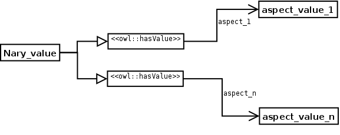
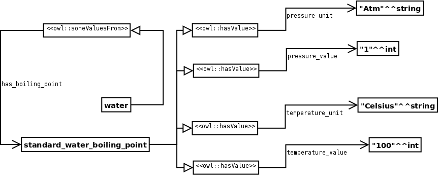

NAME: Nary DataType Relationship.
CLASSIFICATION: Extension.
MOTIVATION: Numerical values can have different aspects. For example, a boiling point has a temperature value, a pressure, etc. This simple ODP should be used to model those cases.
AIM: To represent a datatype value with more than one aspect.
STRUCTURE:
SAMPLE:
ELEMENTS: The original value is reified (decomposed) in all the neccesary data type properties and values.
IMPLEMENTATION: The first step is to choose the datatype value that needs to be reified and create a class for it (e.g. StandardWaterBoilingPoint), then add a restriction (e.g. [Water HasBoilingPoint some StandardWaterBoilingPoint]) and all the neccesary datatype properties and restrictions to the reified class (e.g. [StandardWaterBoilingPoint partial HasUnit value celsius], [StandardWaterBoilingPoint partial HasValue value 100], etc.).
RESULT: After the reification a value with different aspects is represented in the ontology.
RELATED ODPS: Nary Relationship.
REFERENCES:
URL: http://odps.sourceforge.net/odp/owl/Extension_ODP/Nary_DataType_Relationship.owl